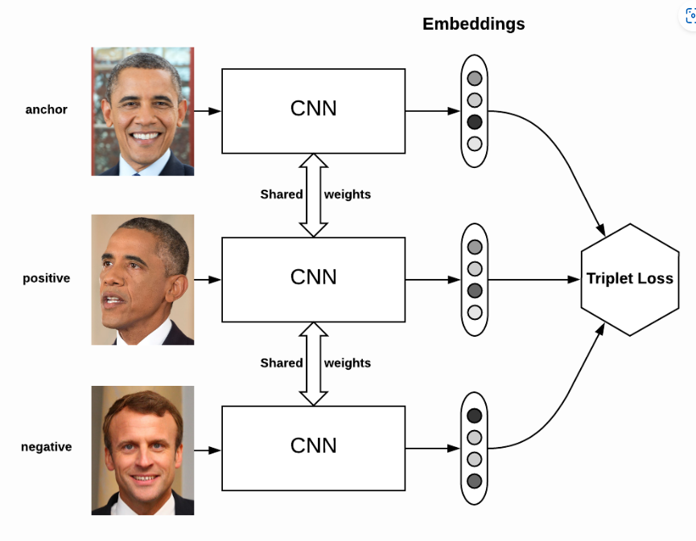
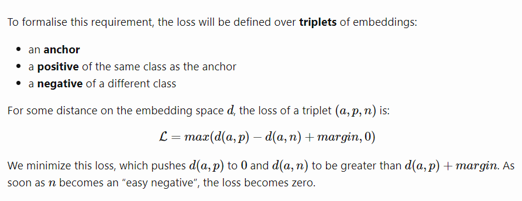
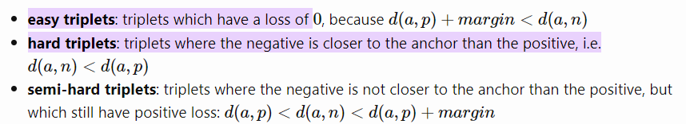
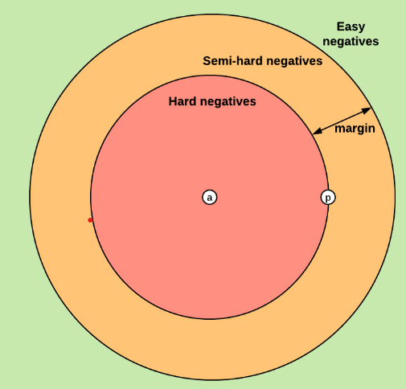

This is a University of Technology Sydney computer vision practical, authored by Zhedong Zheng. The practical explores the basis of learning shared features for different platforms. In this practical, we will learn to build a simple geo-localization system step by step.
Unmanned Aerial Vehicles (UAVs), also known as drones, have emerged as a powerful tool for gathering rich and diverse multimedia content. The task of ground-to-aerial image geo-localization can be achieved by matching a ground view query image to a reference database of aerial/satellite images.
Figure 1: A cross-view matching example between three platforms, i.e., satellite, drone and ground. The figure is credited by LPN.
Figure 2: Different from conventional devices, UAV is a controllable aerial information capture platform, and multi-view information helps to establish a robust target model.
Methods:
A hard exemplar mining strategy is based on triplet reweighting, and weight allocated to each triplet is computed according to its difficulty level. Given a triplet of anchor Ai, its positive exemplar Pi, and negative exemplar Ni,k : where m is the max-margin, dp(i) and dn(i) are the squared Euclidean distance between Ai,Pi and Ai,Ni.
Figure 1: A diagram of the spatial attention submodule.
Figure 2: A diagram of the modified building block. This building block is produced by integrating the proposed FCAM into the basic residual block
Definition of the Loss:
A diagram of the spatial attention submodule.
The goal of the triplet loss is to make sure that:
Two examples with the same label have their embeddings close together in the embedding space
Two examples with different labels have their embeddings far away.
To formalise this requirement, the loss will be defined over triplets of embeddings:

Triplet mining:
Based on the definition of the loss, there are three categories of triplets:

Each of these definitions depend on where the negative is, relatively to the anchor and positive. We can therefore extend these three categories to the negatives: hard negatives, semi-hard negatives or easy negatives.
